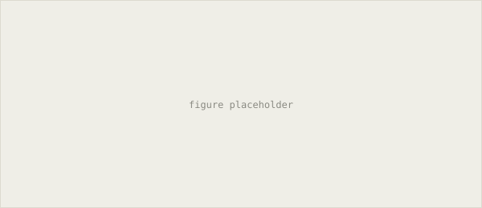

research
Research and projects
Projects and open source code, in reverse chronological order.
ongoing, at Interhuman AI
Representing orientation on its own manifold

When a system combines signals from more than one source, a common shortcut is to flatten everything into a vector and concatenate. This works poorly for quantities like head or body orientation, which live on a rotation group rather than a flat space. Averaging two rotations directly, or treating the difference between them as Euclidean, does not correspond to anything meaningful on the underlying manifold.
The approach keeps this kind of feature in its natural representation, elements of SO(3) or SE(3), through the combination step, rather than projecting it into a flat vector first. Combination is instead defined using operations that respect the geometry, so that a merged estimate stays a valid rotation rather than an average of two matrices that no longer is one. The setting is multimodal behavior recognition, where pose and orientation from video are combined with signal from audio.
undergraduate project, submitted preprint
Cuboid reconstruction from multiple views
Given 2D bounding boxes of the same object seen from several cameras, and the assumption that the object moves on a plane rather than through arbitrary 3D motion, it is possible to recover a consistent 3D cuboid without full 3D annotation or depth sensors. The planar motion assumption removes enough degrees of freedom that the reconstruction becomes solvable from bounding boxes alone, given known camera geometry across views.
The method defines a small set of canonical geometric archetypes for how a box can project under this constraint, and fits the observed 2D boxes against them across views to recover a single consistent cuboid. It started as part of a livestock monitoring project, tracking cattle from multiple fixed cameras, and the write-up generalizes the representation to other planar motion tracking settings. Preprint details are on the publications page.
preprint, 2024
RAYGo, retrieval for asynchronous action planning
An agent planning over a long horizon, where actions do not resolve immediately and outcomes arrive asynchronously, cannot condition purely on its current state the way a short horizon planner can. Much of the relevant information is in what happened earlier in the episode, and in similar situations from other episodes.
RAYGo retrieves past action traces relevant to the current context and uses them to condition the next action, rather than planning from the current state alone. It is framed for large scale settings where the space of possible action sequences is too large to search directly, so retrieval stands in for search.
preprint, 2024
NORA, evolving low rank adaptation
Low rank adaptation fine tunes a language model by learning a small update to each weight matrix, constrained to a fixed rank chosen ahead of time and usually applied uniformly across layers. That choice is typically manual, and there is no strong reason every layer should need the same rank.
NORA uses neuro-evolution to search over rank configurations per layer instead of fixing one value globally, treating the rank assignment itself as something to be optimized rather than set by hand before training starts.
open source, PyTorch and JAX
BMA, query conditioned gating for attention
Gated attention, as used in recent transformer variants, applies a gate to the attention output that is learned but fixed with respect to the query, the same gate value regardless of what is being asked for. That is a capacity bottleneck when different queries would benefit from attending to information differently.
BMA computes the gate as a function of the query itself, so the gating decision can vary per query rather than being shared across all of them. The implementation and experiments, run against standard gated attention as a baseline, are on GitHub.
open source, CUDA and Triton
Graphton, sparse kernels for graph networks
Graph neural network operations are often implemented against a dense adjacency matrix, which is simple to write but scales quadratically with the number of nodes regardless of how sparse the actual graph is. Once a graph is large enough, this stops fitting comfortably in memory well before compute becomes the constraint.
Graphton implements the same operations as a set of Triton kernels working directly on the sparse edge list, so memory use scales with the number of edges rather than the square of the number of nodes.
Smaller reproductions
- ReLMan offline proximal policy optimization implementation, built to check understanding of the algorithm against a known reference rather than to extend it
- TinyStories reproductiontraining scripts for small language models on the TinyStories dataset, following the original paper's setup
- KANTa training library for Kolmogorov-Arnold networks, covering the basis functions and training loop needed to reproduce results from the original architecture